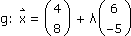
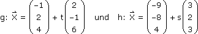
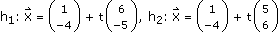
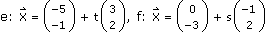

Vektorrechnung - Aufgaben 3
1.
Gib die Gleichungen der parallel zu g gelegenen Geraden h
1 und normal auf g stehenden Geraden h
2 an, wenn beide durch P(1|–4) gehen und
a) 
b) g: 5x – 2y = 9
2.
Gegeben ist das Viereck ABCD[ A(–5|–1), B(0|–3), C(2,5|4), D(–3|3) ]. Gib die Gleichungen der Trägergeraden der Diagonalen in parametrisierter Vektorform an und berechne ihren Schnittpunkt.
3.
Gegeben ist das Dreieck ABC[ A(–5|–4), B(10|4), C(–3|5) ]. Wo liegt der Fußpunkt der Höhe ha?
4.
Gegeben ist das Dreieck ABC[ A(1|–2), B(7|4), C(–5|1) ]. Wo liegt der Höhenschnittpunkt?
5.
Der Punkt P(6|1) wird an der Geraden g: 2x – y = 5 gespiegelt. Wo liegt der gespiegelte Punkt P'?
6.
Der Punkt P(12|3|–10) wird an der Ebene ε: 5x + y – 7z = –17 gespiegelt. Wo liegt der gespiegelte Punkt P'?
7.
Bestimme Schnittpunkt und Schnittwinkel der folgenden Geraden.

8.
Gegeben ist das Dreieck ABC[ A(3|0|–3), B(–3|2|1), C(1|6|2) ]. Wo durchstoßen die Trägergeraden der Seiten die xy-Ebene?
9.
Gegeben ist das Dreieck ABC[ A(–2|1), B(3|–1), C(2|8) ]. Wo liegt der Inkreismittelpunkt?
10.
Gegeben ist das Dreieck ABC[ A(–5|–4), B(11|–4), C(9|10) ]. Wo liegt der Umkreismittelpunkt?
11.
Gegeben ist das Dreieck ABC[ A(1|–3|4), B(–2|–4|3), C(2|0|1) ]. Bestimme a) den Winkel α über das Skalarprodukt, b) die Fläche über das Vektorprodukt.
Ergebnisse:
1. a)  b) h1: 5x – 2y = 13, h2: 2x + 5y = –18
2. , S(–2|1)
3. Fa(–4,3|5,1)
4. H(2|–6)
5. P'(1,2|3,4)
6. P'(–8|–1|18)
7. S(3|0|16); 42,9°
8. Sa(–7|–2|0),
Sb(1,8|3,6|0), Sc(–1,5|1,5|0)
9. Mi(0,75|1,96)
10. Mu(3|2)
11. a) 102° b) 7,07